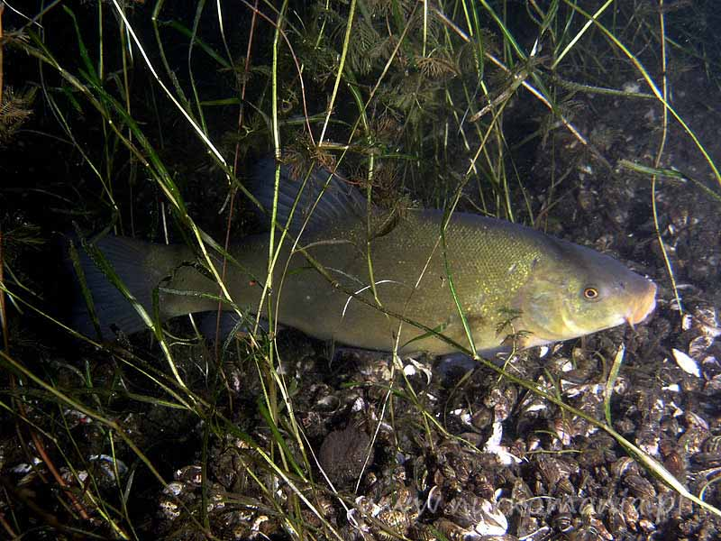
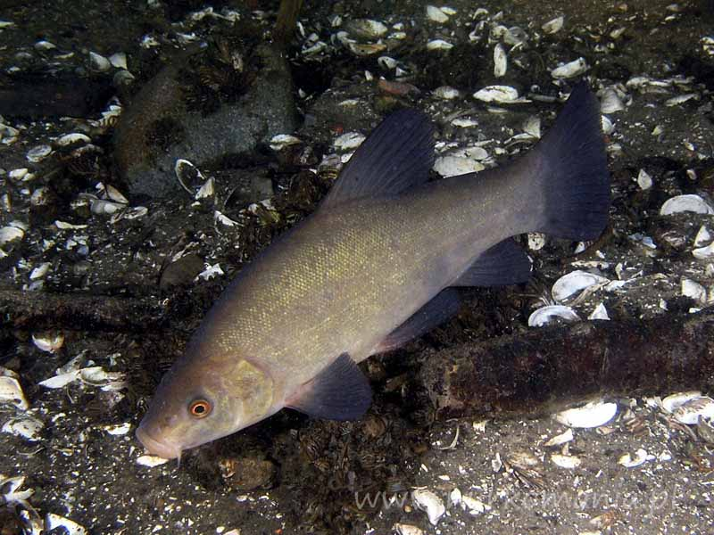
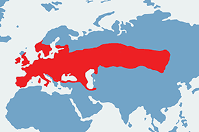

Lin to ryba z rodziny karpiowatych. Ciało tej ryby jest lekko bocznie spłaszczone,  wydłużone.Łuski, pokrywające ciało, są drobne. Ciało ma brunatnozielony kolor ze złotym połyskiem. Grzbiet jest ciemny, boki jaśniejsze, brzuch jest jasny. W kątach otworu gębowego znajdują się po jednym wąsiku. Zęby gardłowe znajdują się w jednym szeregu. Średnia długość lina to 30 cm. Płetwa ogonowa jest słabo wcięta. Oczy mają czerwony kolor. Dymorfizm płciowy jest wyraźnie zaznaczony. Samce mają wydłużone płetwy brzuszne.
Występowanie i środowisko
Ryba ta występuje w Europie poza Skandynawią i północnym-wschodem, występuje też w Azji. Preferuje jeziora i stawy o mulistym dnie. Rzeki zasiedla w przypadku spokojnych i zacisznych odcinków. To pospolita u nas ryba.
Tryb życia i zachowanie
Lin lubi żerować wieczorem. Zimuje zakopany w mule.
Pożywienie
Lin żywi się fauną denną. Zjada larwy owadów, ślimaki,małże, robaki.
Rozmnażanie
Samica składa ikrę kilka razy w ciągu roku od czerwca do połowy sierpnia. Tarło ma miejsce na płytkich wodach, dno których jest porośnięte roślinnością, do której ikra się przykleja.
Ciekawostki
Mięso lina jest bardzo smaczne. Ryba ta jest ceniona przez wędkarzy.
Okres ochronny: nie ma
Wymiar ochronny:do 25 cm
Dobowy limit połowu: 4 szt razem z sieją i węgorzem
Rekord Polski: 4,5 kg 66 cm